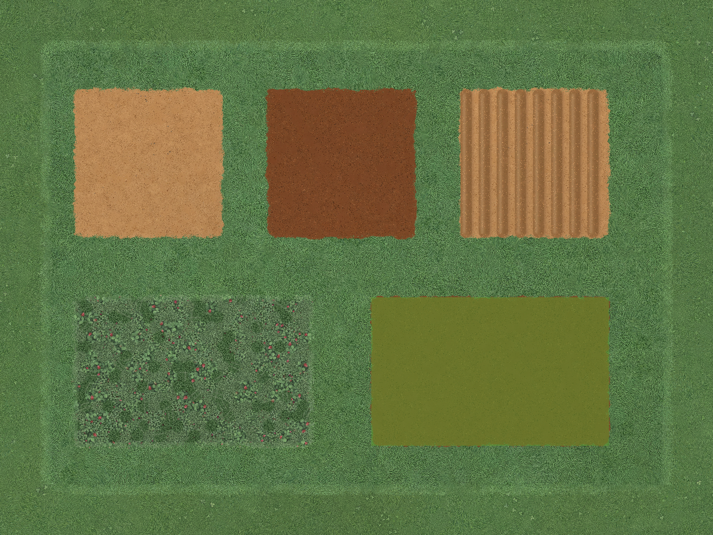
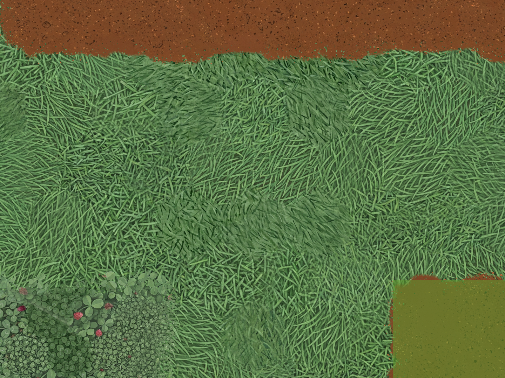
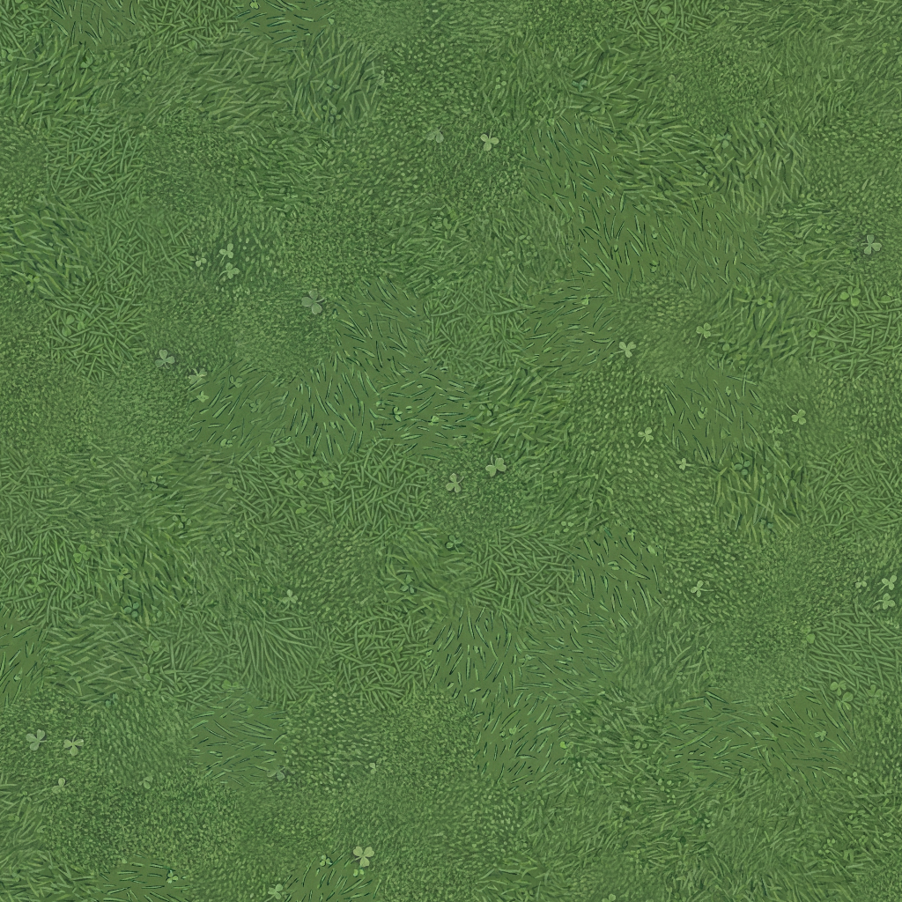
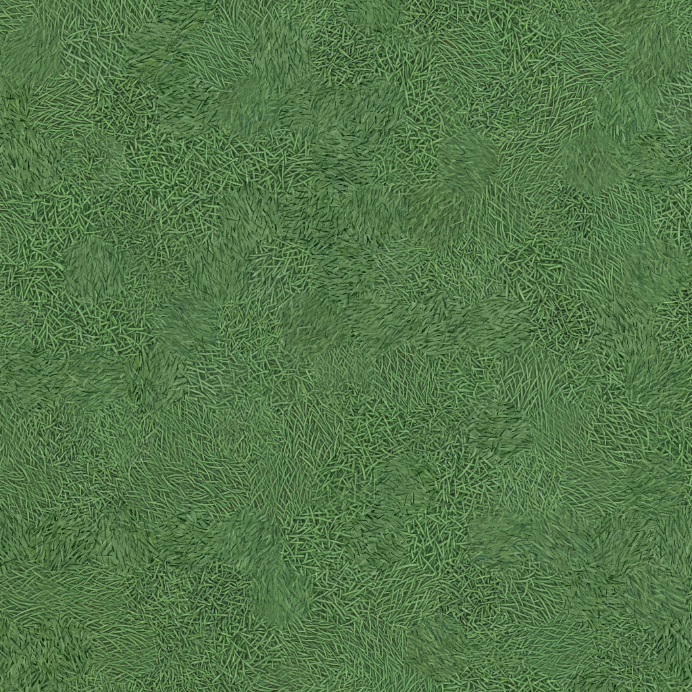
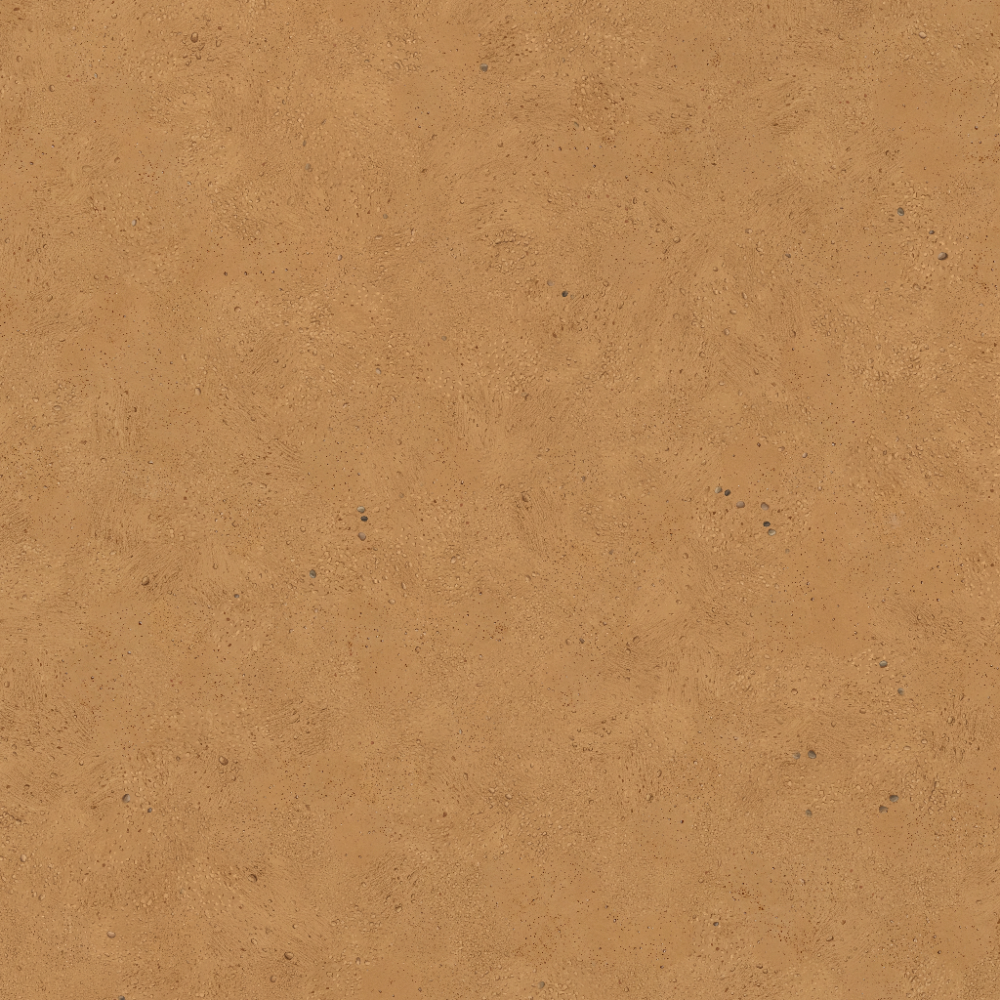
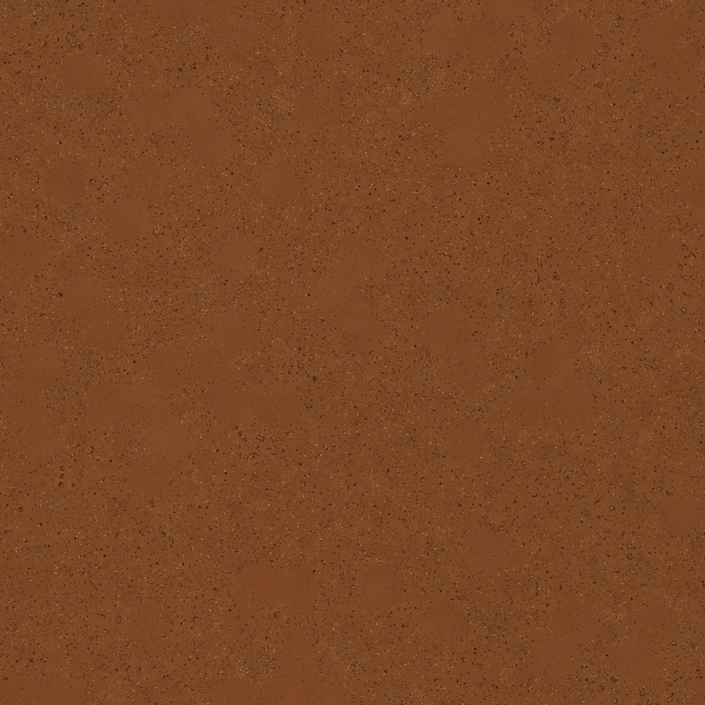
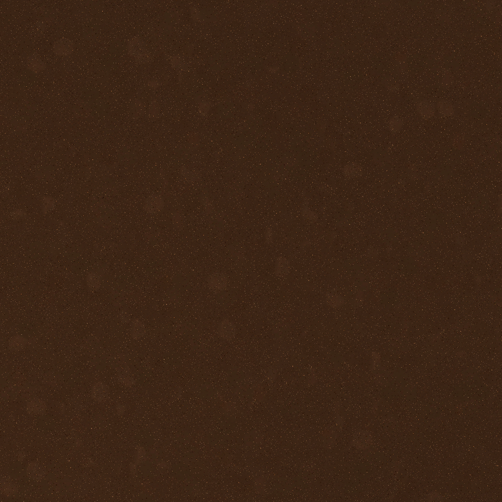
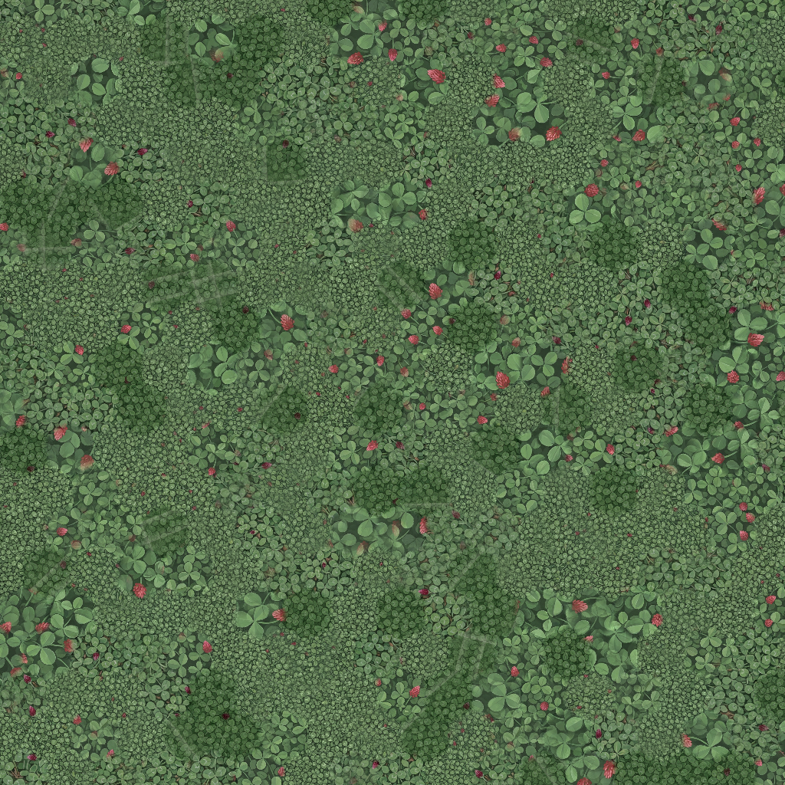

Whole garden
Actual ScenePainter output. Top row: dirt, prepared soil and planted rows. Bottom: resolved crimson clover and the generic unknown-cover fallback.

Close view · 160 px/m
Color matching removes much of the patchwork, but grass strokes and clover leaves still change size across cells. These candidates are not approved.

Wild grass
Remaining mismatch: fine stippled turf, longer blades and sparse clippings are different treatments, not just different colors.

Lawn
Brightness islands improve, but blade length, orientation and density still differ between sources.

Dirt
Color matching substantially reduces smooth light islands. Some changes in grain density remain.

Prepared soil
The obvious pale cell islands largely disappear. Source near-duplicates and inconsistent aggregate density remain unresolved.

Loam
Strongest corrected bank: fine crumbs and much less visible cell-to-cell tone variation. Still an isolated candidate, not installed.

Crimson clover
Large and small leaf clusters remain visibly mixed. Pale source-border fragments also survive. Not approved.
